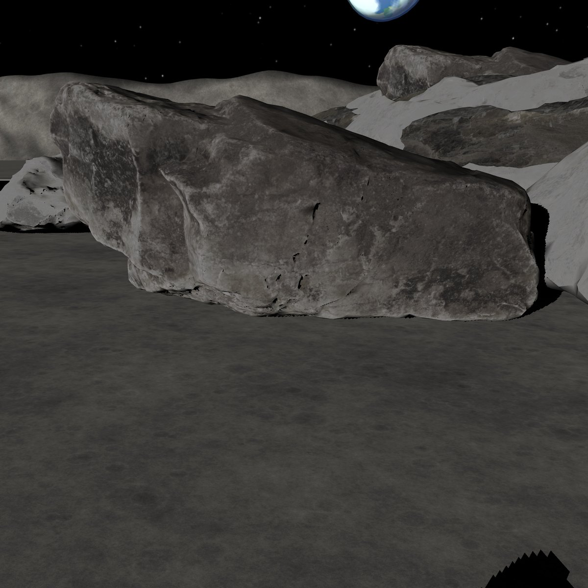

01 / 先看它怎么跨
同一块石头。
轮子停住，腿迈过去。
轮子装在腿上，一次抬一只，跨过门槛，再把轮子放回地面。直接看同场同石的动作。
画面：同一场景、同一块门槛的真实几何预检查。跨越录像加速播放。把跨越看近一点 ↗
这组动作的实测范围
独立标定的 10、12、15 厘米三个采样高度：轮行 90 次未通过，逐轮跨越 24 次干净通过。画面的单次预检查不替代完整标定统计。
原标定结果 · 能力矩阵与开发记录02 / 石头后面，照片看不到
它先想出一整块石头。
照片交给 Lux3D，交回来的是可以转到背面看的三维。下面每一份，都是实际生成的模型。

想出来的几何会先被检查，再进入预演世界。
想出来的，先过检查
这一份，没让它相信。
实际生成的模型没通过原检查。事后强行采用这份被拒的想象，再跑一次，车确实碰到了石头。
这是原记录中的强制信任诊断，单独标明，不算正式行驶成绩。原检查、输入前缀核验和实际碰撞都保留。
这份模型与这次诊断的原记录 ↗03 / 先在想象里试走
每一种想象，
都真的开一遍。
车在生成的石头之间绕行。这里播放十二个原物理预演世界的录像；点一份，看它从头走到尾。
这段录像与实际行驶是什么关系
这里的石头是已准入的 Lux3D 候选模型。十二个世界都完成原物理预演且无碰撞，之后机器人在独立的真实场景中执行。拍摄使用保存的全关节状态，没有新增实验，也没有用轨迹示意图替代动作。
每一个预演的原记录原运行录像 / LEVELS
同一条路，三种看法。
选一条实际跑过的路，再换开法。看见的是这一次运行的车、石头和结局。
想象也会出错
照片对上了。
背面，还是可能想错。
把实际生成的石头转到背面，与原扫描叠在一起看。下面是原几何的三维对照。
原运行录像 / FAILURES
成功、碰撞、停下。
都让你看到。
不是只展示漂亮的那次。原方法碰过的石头、收紧后停住的车，也有自己的录像。
高石之后，还有门槛
绕过去，再跨过去。
这一场 B 和 D 都到达，不把它说成想象必不可少的证明。